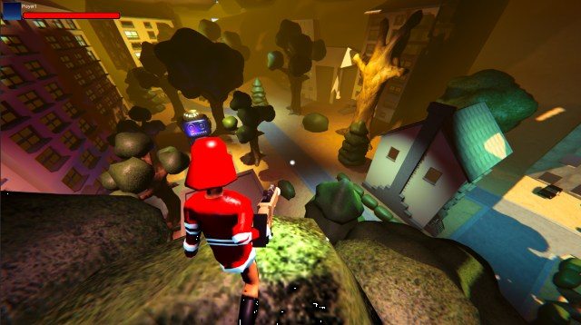
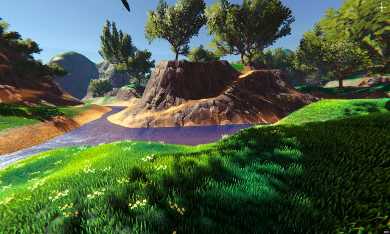
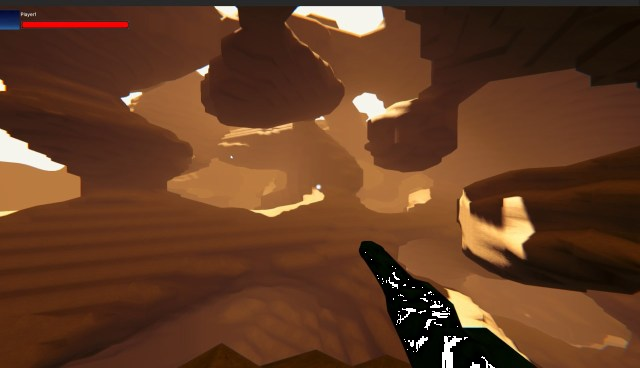
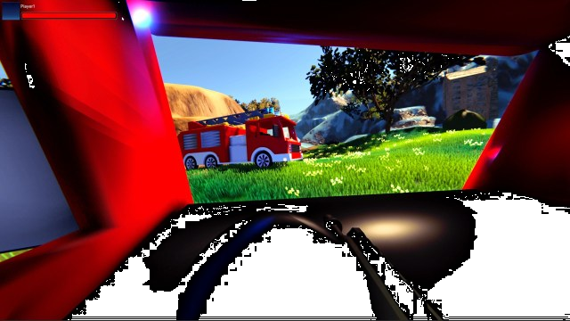

Multiplayer Game With full menu sample and scenes
   
- CoDriven Advanced UI documentation
- Multiplayer Game With full menu sample and scenes
- Main menu scene (MainMenuScene.unity)
Introduction
CoDriven Advanced UI is published with a fully working 3d multiplayer game using MIRROR/LAN (LAN because there is no ROOM/LOBBY/MATCH MAKING SERVICES. You can improve it by adding this functionality). The game itself is valuable, but the most important part of the game is the UI.
UI in the game was fully created using CoDriven Advanced UI.
The game is split into scenes. The game example is the most advanced of all other examples so please read the tutorial sections first here
Main menu scene (MainMenuScene.unity)
This scene is built mostly for Main Menu-related actions and settings.
MainMenuScreensManager
Scene i build upon the MainMenuScreensManager.cs. This is the core of the whole main menu. It contains 6 screens added in OnAddSupportedScreens and 4 themes added in OnAddSupportedThemes.
OnBindUiEventsHandler is used to handle global-related actions like theme changing, or language. Open MainMenuScreensManager.cs for details.
The MainMenuScreensManager is a container of:
- CmScreenMain.cs - the main menu panel with options like exit, about, settings, multiplayer
almost all screens are built from CmScreenParts that can be reused to reduce code repetition. All classes that represent CmScrenPart is suffixed with "Sp" at the end of the class name.
Here is how the main screen is built:
public override void OnMakeScreenContent(ScreenContentBuilder contentBuilder)
{
var mainMenuGP = new MainMenuPanelSp(this);
var screen = new MainScreenContentSp(this, mainMenuGP, null, null);
contentBuilder.AddContent(screen);
}
MainMenuPanelSp.cs is a Main menu panel on the left side of the screen with options like exit, settings, about, multiplayer and this container is added to MainScreenContentSp.cs which is the main container for up to three Menu panels (left, center, right), We only pass mainMenuGP to the left panel param of the MainScreenContentSp constructor. So center and right panels will be null.
Finally, the whole container is added to the contentList
This way all the things will be rendered on screen. To see how it works please see the code of MainScreenContentSp.cs ** and MainMenuPanelSp.cs**
MainMenuPanelSp is mostly responsible for changing the current screen to about/settings/multiplayer etc.
- CmScreenAbout.cs - this is screen with game description.
This panel is built in a similar way to CmScreenMainMenu. The MainScreenContentSp is filled with 2 panels:
- MainMenuPanelSp.cs on the left for options
- PanelAboutSp.cs on the center as about panel with game description.
public override void OnMakeScreenContent(ScreenContentBuilder contentBuilder)
{
var mainMenuGP = new MainMenuPanelSp(this);
var mainMenuAboutSs = new PanelAboutSp(this);
var screen = new MainScreenContentSp(this, mainMenuGP, mainMenuAboutSs);
contentBuilder.AddContent(screen);
}
please open PanelAboutSp.cs to see how you can add a colored rich text
- CmScreenMapSelect.cs - this is screen with game description.
This panel is built in a similar way to CmScreenMainMenu. The MainScreenContentSp is filled with 2 panels:
- MainMenuPanelSp.cs on the left for options as always :)
- MapSelectPanelSp.cs on the center as about panel with game description.
public override void OnMakeScreenContent(ScreenContentBuilder contentBuilder)
{
var mainMenuGP = new MainMenuPanelSp(this);
var mapSelectPanelSp = new MapSelectPanelSp(this);
var screen = new MainScreenContentSp(this, mainMenuGP, mapSelectPanelSp, null);
contentBuilder.AddContent(screen);
}
these two panels are added to the main container MainScreenContentSp and finally to contentList to make it visible later
Note: The MapSelectPanelSp.cs is an interesting part of this screen because it contains CmDraggableScrollView for screenshots from game maps. This control allows you to scroll and snap to the center of an image, and move between images with centering the current image in the center of the control. The content for this control is a list of CmImage controls representing map screenshots. Open the MapSelectPanelSp.cs class for more details
- CmScreenSettingsControls.cs - is a simple screen with key bindings for the game.
This panel is built in a similar way to previous screens but contains three panels instead of two like before:
- MainMenuPanelSp.cs on the left for options
- MiddlePanelSettingsSp.cs on the center - panel with settings like audio, video, controls, etc.
- PanelSettingsControlsSp.cs on the right - panel with key bindings description and contains two sliders to change mouse sensitivity for camera movement during the game
public override void OnMakeScreenContent(ScreenContentBuilder contentBuilder)
{
var mainMenuGP = new MainMenuPanelSp(this);
var settingsGp = new MiddlePanelSettingsSp(this);
var controlsSp = new PanelSettingsControlsSp(this);
var screen = new MainScreenContentSp(this, mainMenuGP, settingsGp, controlsSp);
contentBuilder.AddContent(screen);
}
please open PanelSettingsControlsSp.cs to see how to change mouse sensitivity
Game Controls
During play, you can use a keyboard and mouse
mouse: left button - shoot weapon
mouse: right button - use grappling hook
key: w - move forward
key: s - move backward
key: a - move left
key: d - move right
key: space - jump
key: f - on/off flashlight
key: w - move forward
key: c - zoom when using a sniper weapon
key: t - camera toggle
key: 1,2,3,4 - change weapons
key: E - join vehicle
key: Q - leave vehicle